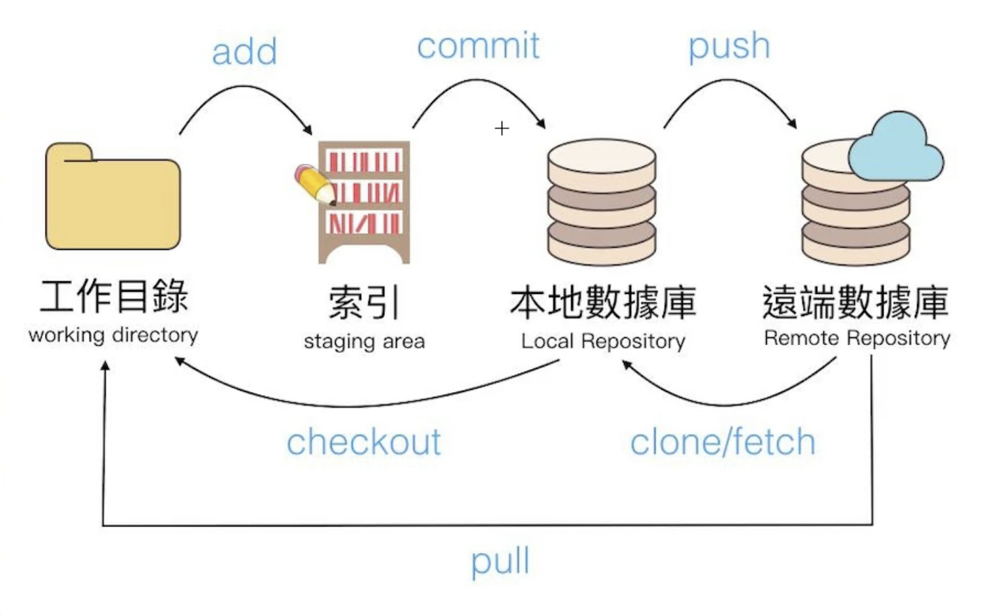

左邊選單列「原始檔控制」
把工作目錄的東西add到索引裡面：更新頁面後儲存後左邊選單就可以按+
索引commit進到本地數據庫：提交
本地數據庫push到遠端數據庫（=github）：同步變更
發布分支（branch）上面對話匡可以打上repository的名稱，然後記得要選public公開的
發佈網站的話是進到github>repository>setting>pages>main>save>重整到他網址跑出來
要快一點的話可以把網址貼到無痕視窗開開看，超快
